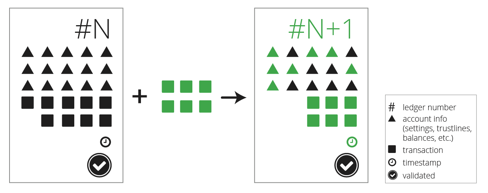
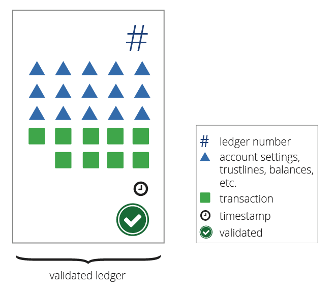

The Ledger
The Ripple Consensus Ledger is a shared, global ledger that is open to all. Individual participants can trust the integrity of the ledger without having to trust any single institution to manage it. The rippled server software accomplishes this by managing a ledger database that can only be updated according to very specific rules. Each instance of rippled keeps a full copy of the ledger, and the peer-to-peer network of rippled servers distributes candidate transactions among themselves. The consensus process determines which transactions get applied to each new version of the ledger. See also: The Consensus Process.

The shared global ledger is actually a series of individual ledgers, or ledger versions, which rippled keeps in its internal database. Every ledger version has a ledger index which identifies the order in which ledgers occur. Each closed ledger version also has an identifying hash value, which uniquely identifies the contents of that ledger. At any given time, a rippled instance has an in-progress "current" open ledger, plus some number of closed ledgers that have not yet been approved by consensus, and any number of historical ledgers that have been validated by consensus. Only the validated ledgers are certain to be correct and immutable.
A single ledger version consists of several parts:

- A header - The ledger index, hashes of its other contents, and other metadata.
- A transaction tree - The transactions that were applied to the previous ledger to make this one. Transactions are the only way to change the ledger.
- A state tree - All the ledger nodes that contain the settings, balances, and objects in the ledger as of this version.
Tree Format
As its name might suggest, a ledger's state tree is a tree data structure, with each node identified by a 256-bit value called an index. In JSON, a ledger node's index value is represented as a 64-character hexadecimal string like "193C591BF62482468422313F9D3274B5927CA80B4DD3707E42015DD609E39C94". Every node in the state tree has an index that you can use as a key to look up the node in the state tree; every transaction has an indentifying hash that you can use to look up the transaction in the transaction tree. Do not confuse the index (key) of a ledger node with the ledger_index (sequence number) of a ledger.
In the case of transactions, the identifying hash is based on the signed transaction instructions, but the contents of the transaction object when you look it up also contain the results and metadata of the transaction, which are not taken into account when generating the hash.
In the case of state nodes, rippled usually includes the index of the node along with its contents. However, the index itself is not part of the contents. The index is derived by hashing important contents of the node, along with a namespace identifier. The ledger node type determines which namespace identifier to use as well as which contents to include in the hash. This ensures every index is unique. For a hash function, rippled uses SHA-512 and then truncates the result to the first 256 bytes. This algorithm, informally called SHA-512Half, provides an output that has comparable security to SHA-256, but runs faster on 64-bit processors.

Header Format
Every ledger version has a unique header that describes the contents. You can look up a ledger's header information with the ledger command. The contents of the ledger header are as follows:
| Field | JSON Type | Internal Type | Description |
|---|---|---|---|
| ledger_index | String | UInt32 | The sequence number of the ledger. Some API methods display this as a quoted integer; some display it as a native JSON number. |
| ledger_hash | String | Hash256 | The SHA-512Half of the ledger header, excluding the ledger_hash itself. This serves as a unique identifier for this ledger and all its contents. |
| account_hash | String | Hash256 | The SHA-512Half of this ledger's state tree information. |
| close_time | Number | UInt32 | The approximate time this ledger closed, as the number of seconds since the Ripple Epoch of 2000-01-01 00:00:00. This value is rounded based on the close_time_resolution, so later ledgers can have the same value. |
| closed | Boolean | bool | If true, this transaction is no longer accepting new transactions. (However, unless this ledger is validated, it might be replaced by a different ledger with a different set of transactions.) |
| parent_hash | String | Hash256 | The ledger_hash value of the previous ledger that was used to build this one. If there are different versions of the previous ledger index, this indicates from which one the ledger was derived. |
| total_coins | String | UInt64 | The total number of drops of XRP owned by accounts in the ledger. This subtracts XRP that has been destroyed by transaction fees. The actual amount of XRP in circulation is lower because some accounts are "black holes" whose keys are not known by anyone. |
| transaction_hash | String | Hash256 | The SHA-512Half of the transactions included in this ledger. |
| close_time_resolution | Number | Uint8 | An integer in the range [2,120] indicating the maximum number of seconds by which the close_time could be rounded. |
| closeFlags | (Omitted) | UInt8 | A bit-map of flags relating to the closing of this ledger. |
Ledger Index
A ledger index is a 32-bit unsigned integer used to identify a ledger. The ledger index is also known as the ledger's sequence number. The very first ledger was ledger index 1, and each new ledger has a ledger index 1 higher than that of the ledger immediately before it.
The ledger index indicates the order of the ledgers; the Hash value identifies the exact contents of the ledger. Two ledgers with the same hash are always the same. For validated ledgers, hash values and sequence numbers are equally valid and correlate 1:1. However, this is not true for in-progress ledgers:
- Two different
rippledservers may have different contents for a current ledger with the same ledger index, due to latency in propagating transactions throughout the network. - There may be multiple closed ledger versions competing to be validated by consensus. These ledger versions have the same sequence number but different contents (and different hashes). Only one of these closed ledgers can become validated.
- A current ledger's contents change over time, which would cause its hash to change, even though its ledger index number stays the same. The hash of a ledger is not calculated until the ledger is closed.
Close Flags
The ledger has only one flag defined for closeFlags: sLCF_NoConsensusTime (value 1). If this flag is enabled, it means that validators had different close times for the ledger, but built otherwise the same ledger, so they declared consensus while "agreeing to disagree" on the close time. In this case, the consensus ledger contains a close_time value that is 1 second after that of the previous ledger. (In this case, there is no official close time, but the actual real-world close time is probably 3-6 seconds later than the specified close_time.)
The closeFlags field is not included in any JSON representations of a ledger, but is included in the binary representation of a ledger, and is one of the fields that determine the ledger's hash.
Ledger Node Types
There are several different kinds of nodes that can appear in the ledger's state tree:
- AccountRoot - The settings, XRP balance, and other metadata for one account.
- DirectoryNode - Contains links to other nodes.
- Offer - An offer to exchange currencies, known in finance as an order.
- RippleState - Links two accounts, tracking the balance of one currency between them. The concept of a trust line is really an abstraction of this node type.
Each ledger node consists of several fields. In the peer protocol that rippled servers use to communicate with each other, ledger nodes are represented in their raw binary format. In other rippled APIs, ledger nodes are represented as JSON objects.
AccountRoot
The AccountRoot node type describes a single account object. Example AccountRoot node:
{
"Account": "rf1BiGeXwwQoi8Z2ueFYTEXSwuJYfV2Jpn",
"AccountTxnID": "0D5FB50FA65C9FE1538FD7E398FFFE9D1908DFA4576D8D7A020040686F93C77D",
"Balance": "148446663",
"Domain": "6D64756F31332E636F6D",
"EmailHash": "98B4375E1D753E5B91627516F6D70977",
"Flags": 8388608,
"LedgerEntryType": "AccountRoot",
"MessageKey": "0000000000000000000000070000000300",
"OwnerCount": 3,
"PreviousTxnID": "0D5FB50FA65C9FE1538FD7E398FFFE9D1908DFA4576D8D7A020040686F93C77D",
"PreviousTxnLgrSeq": 14091160,
"Sequence": 336,
"TransferRate": 1004999999,
"index": "13F1A95D7AAB7108D5CE7EEAF504B2894B8C674E6D68499076441C4837282BF8"
}
The AccountRoot node has the following fields:
| Field | JSON Type | Internal Type | Description |
|---|---|---|---|
| LedgerEntryType | String | UInt16 | The value 0x61, mapped to the string AccountRoot, indicates that this node is an AccountRoot object. |
| Account | String | AccountID | The identifying address of this account, such as rf1BiGeXwwQoi8Z2ueFYTEXSwuJYfV2Jpn. |
| Flags | Number | UInt32 | A bit-map of boolean flags enabled for this account. |
| Sequence | Number | UInt32 | The sequence number of the next valid transaction for this account. (Each account starts with Sequence = 1 and increases each time a transaction is made.) |
| Balance | String | Amount | The account's current XRP balance in drops, represented as a string. |
| OwnerCount | Number | UInt32 | The number of objects this account owns in the ledger, which contributes to its owner reserve. |
| PreviousTxnID | String | Hash256 | The identifying hash of the transaction that most recently modified this node. |
| PreviousTxnLgrSeq | Number | UInt32 | The index of the ledger that contains the transaction that most recently modified this node. |
| AccountTxnID | String | Hash256 | (Optional) The identifying hash of the transaction most recently submitted by this account. |
| RegularKey | String | AccountID | (Optional) The address of a keypair that can be used to sign transactions for this account instead of the master key. Use a SetRegularKey transaction to change this value. |
| EmailHash | String | Hash128 | (Optional) The md5 hash of an email address. Clients can use this to look up an avatar through services such as Gravatar. |
| WalletLocator | String | Hash256 | (Optional) DEPRECATED. Do not use. |
| WalletSize | Number | UInt32 | (Optional) DEPRECATED. Do not use. |
| MessageKey | String | VariableLength | (Optional) A public key that may be used to send encrypted messages to this account. In JSON, uses hexadecimal. No more than 33 bytes. |
| TransferRate | Number | UInt32 | (Optional) A transfer fee to charge other users for sending currency issued by this account to each other. |
| Domain | String | VariableLength | (Optional) A domain associated with this account. In JSON, this is the hexadecimal for the ASCII representation of the domain. |
AccountRoot Flags
There are several options which can be either enabled or disabled for an account. These options can be changed with an AccountSet transaction. In the ledger, flags are represented as binary values that can be combined with bitwise-or operations. The bit values for the flags in the ledger are different than the values used to enable or disable those flags in a transaction. Ledger flags have names that begin with lsf.
AccountRoot nodes can have the following flag values:
| Flag Name | Hex Value | Decimal Value | Description | Corresponding AccountSet Flag |
|---|---|---|---|---|
| lsfPasswordSpent | 0x00010000 | 65536 | Indicates that the account has used its free SetRegularKey transaction. | (None) |
| lsfRequireDestTag | 0x00020000 | 131072 | Requires incoming payments to specify a Destination Tag. | asfRequireDest |
| lsfRequireAuth | 0x00040000 | 262144 | This account must individually approve other users for those users to hold this account's issuances. | asfRequireAuth |
| lsfDisallowXRP | 0x00080000 | 524288 | Client applications should not send XRP to this account. Not enforced by rippled. |
asfDisallowXRP |
| lsfDisableMaster | 0x00100000 | 1048576 | Disallows use of the master key to sign transactions for this account. | asfDisableMaster |
| lsfNoFreeze | 0x00200000 | 209715 | This address cannot freeze trust lines connected to it. Once enabled, cannot be disabled. | asfNoFreeze |
| lsfGlobalFreeze | 0x00400000 | 4194304 | All assets issued by this address are frozen. | asfGlobalFreeze |
| lsfDefaultRipple | 0x00800000 | 8388608 | Enable rippling on this addresses's trust lines by default. Required for issuing addresses; discouraged for others. | asfDefaultRipple |
AccountRoot Index Format
The index of an AccountRoot node is the SHA-512Half of the following values put together:
- The Account space key (
a) - The AccountID of the account
DirectoryNode
The DirectoryNode node type provides a list of links to other nodes in the ledger's state tree. A single conceptual Directory takes the form of a doubly linked list, with one or more DirectoryNode objects each containing up to 32 indexes of other nodes. The first node is called the root of the directory, and all nodes other than the root node can be added or deleted as necessary.
There are two kinds of Directories:
- Owner directories list other nodes owned by an account, such as RippleState or Offer nodes.
- Offer directories list the offers available in the distributed exchange. A single Offer Directory contains all the offers that have the same exchange rate for the same issuances.
Example Directories:
{
"ExchangeRate": "4F069BA8FF484000",
"Flags": 0,
"Indexes": [
"AD7EAE148287EF12D213A251015F86E6D4BD34B3C4A0A1ED9A17198373F908AD"
],
"LedgerEntryType": "DirectoryNode",
"RootIndex": "1BBEF97EDE88D40CEE2ADE6FEF121166AFE80D99EBADB01A4F069BA8FF484000",
"TakerGetsCurrency": "0000000000000000000000000000000000000000",
"TakerGetsIssuer": "0000000000000000000000000000000000000000",
"TakerPaysCurrency": "0000000000000000000000004A50590000000000",
"TakerPaysIssuer": "5BBC0F22F61D9224A110650CFE21CC0C4BE13098",
"index": "1BBEF97EDE88D40CEE2ADE6FEF121166AFE80D99EBADB01A4F069BA8FF484000"
}
{
"Flags": 0,
"Indexes": [
"AD7EAE148287EF12D213A251015F86E6D4BD34B3C4A0A1ED9A17198373F908AD",
"E83BBB58949A8303DF07172B16FB8EFBA66B9191F3836EC27A4568ED5997BAC5"
],
"LedgerEntryType": "DirectoryNode",
"Owner": "rpR95n1iFkTqpoy1e878f4Z1pVHVtWKMNQ",
"RootIndex": "193C591BF62482468422313F9D3274B5927CA80B4DD3707E42015DD609E39C94",
"index": "193C591BF62482468422313F9D3274B5927CA80B4DD3707E42015DD609E39C94"
}
| Name | JSON Type | Internal Type | Description |
|---|---|---|---|
| LedgerEntryType | Number | UInt16 | The value 0x64, mapped to the string DirectoryNode, indicates that this node is part of a Directory. |
| Flags | Number | UInt32 | A bit-map of boolean flags enabled for this directory. Currently, the protocol defines no flags for DirectoryNode objects. |
| RootIndex | Number | Hash256 | The index of root node for this directory. |
| Indexes | Array | Vector256 | The contents of this Directory: an array of indexes to other nodes. |
| IndexNext | Number | UInt64 | (Optional) If this Directory consists of multiple nodes, this index links to the next node in the chain, wrapping around at the end. |
| IndexPrevious | Number | UInt64 | (Optional) If this Directory consists of multiple nodes, this index links to the previous node in the chain, wrapping around at the beginning. |
| Owner | String | AccountID | (Owner Directories only) The address of the account that owns the objects in this directory. |
| ExchangeRate | Number | UInt64 | (Offer Directories only) DEPRECATED. Do not use. |
| TakerPaysCurrency | String | Hash160 | (Offer Directories only) The currency code of the TakerPays amount from the offers in this directory. |
| TakerPaysIssuer | String | Hash160 | (Offer Directories only) The issuer of the TakerPays amount from the offers in this directory. |
| TakerGetsCurrency | String | Hash160 | (Offer Directories only) The currency code of the TakerGets amount from the offers in this directory. |
| TakerGetsIssuer | String | Hash160 | (Offer Directories only) The issuer of the TakerGets amount from the offers in this directory. |
Directory Index Formats
There are three different formulas for creating the index of a DirectoryNode, depending on whether the DirectoryNode represents:
- The first page (also called the root) of an Owner Directory,
- The first page of an Offer Directory, or
- Later pages of either type
The first page of an Owner Directory has an index that is the SHA-512Half of the following values put together:
- The Owner Directory space key (
O, capital letter O) - The AccountID from the
Ownerfield.
The first page of an Offer Directory has a special index: the higher 192 bits define the order book, and the remaining 64 bits define the exchange rate of the offers in that directory. (An index is big-endian, so the book is in the more significant bits, which come first, and the quality is in the less significant bits which come last.) This provides a way to iterate through an order book from best offers to worst. Specifically: the first 192 bits are the first 192 bits of the SHA-512Half of the following values put together:
- The Book Directory space key (
B) - The 160-bit currency code from the
TakerPaysCurrency - The 160-bit currency code from the
TakerGetsCurrency - The AccountID from the
TakerPaysIssuer - The AccountID from the
TakerGetsIssuer
The lower 64 bits of an Offer Directory's index represent the TakerPays amount divided by TakerGets amount from the offer(s) in that directory as a 64-bit number in Ripple's internal amount format.
If the DirectoryNode is not the first page in the Directory (regardless of whether it is an Owner Directory or an Offer Directory), then it has an index that is the SHA-512Half of the following values put together:
- The Directory Node space key (
d) - The
indexof the root DirectoryNode - The page number of this node. (Since 0 is the root DirectoryNode, this value is an integer 1 or higher.)
Offer
The Offer node type describes an offer to exchange currencies, more traditionally known as an order, in Ripple's distributed exchange. An OfferCreate transaction only creates an Offer node in the ledger when the offer cannot be fully executed immediately by consuming other offers already in the ledger.
An offer can become unfunded through other activities in the network, while remaining in the ledger. However, rippled automatically prunes any unfunded offers it happens across in the course of transaction processing (and only transaction processing, because the ledger state must only be changed by transactions). For more information, see lifecycle of an offer.
Example Offer node:
{
"Account": "rBqb89MRQJnMPq8wTwEbtz4kvxrEDfcYvt",
"BookDirectory": "ACC27DE91DBA86FC509069EAF4BC511D73128B780F2E54BF5E07A369E2446000",
"BookNode": "0000000000000000",
"Flags": 131072,
"LedgerEntryType": "Offer",
"OwnerNode": "0000000000000000",
"PreviousTxnID": "F0AB71E777B2DA54B86231E19B82554EF1F8211F92ECA473121C655BFC5329BF",
"PreviousTxnLgrSeq": 14524914,
"Sequence": 866,
"TakerGets": {
"currency": "XAG",
"issuer": "r9Dr5xwkeLegBeXq6ujinjSBLQzQ1zQGjH",
"value": "37"
},
"TakerPays": "79550000000",
"index": "96F76F27D8A327FC48753167EC04A46AA0E382E6F57F32FD12274144D00F1797"
}
An Offer node has the following fields:
| Name | JSON Type | Internal Type | Description |
|---|---|---|---|
| LedgerEntryType | String | UInt16 | The value 0x6F, mapped to the string Offer, indicates that this node is an Offer object. |
| Flags | Number | UInt32 | A bit-map of boolean flags enabled for this offer. |
| Account | String | AccountID | The address of the account that owns this offer. |
| Sequence | Number | UInt32 | The Sequence value of the OfferCreate transaction that created this Offer node. Used in combination with the Account to identify this Offer. |
| TakerPays | String or Object | Amount | The remaining amount and type of currency requested by the offer creator. |
| TakerGets | String or Object | Amount | The remaining amount and type of currency being provided by the offer creator. |
| BookDirectory | String | UInt256 | The index of the Offer Directory that links to this offer. |
| BookNode | String | UInt64 | A hint indicating which page of the offer directory links to this node, in case the directory consists of multiple nodes. |
| OwnerNode | String | UInt64 | A hint indicating which page of the owner directory links to this node, in case the directory consists of multiple nodes. Note: The offer does not contain a direct link to the owner directory containing it, since that value can be derived from the Account. |
| PreviousTxnID | String | Hash256 | The identifying hash of the transaction that most recently modified this node. |
| PreviousTxnLgrSeq | Number | UInt32 | The index of the ledger that contains the transaction that most recently modified this node. |
| Expiration | Number | UInt32 | (Optional) Indicates the time after which this offer is considered unfunded. See Specifying Time for details. |
Offer Flags
There are several options which can be either enabled or disabled when an OfferCreate transaction creates an offer node. In the ledger, flags are represented as binary values that can be combined with bitwise-or operations. The bit values for the flags in the ledger are different than the values used to enable or disable those flags in a transaction. Ledger flags have names that begin with lsf.
Offer nodes can have the following flag values:
| Flag Name | Hex Value | Decimal Value | Description | Corresponding OfferCreate Flag |
|---|---|---|---|---|
| lsfPassive | 0x00010000 | 65536 | The node was placed as a passive offer. This has no effect on the node in the ledger. | tfPassive |
| lsfSell | 0x00020000 | 131072 | The node was placed as a sell offer. This has no effect on the node in the ledger (because tfSell only matters if you get a better rate than you asked for, which cannot happen after the node enters the ledger). | tfSell |
Offer Index Format
The index of an Offer node is the SHA-512Half of the following values put together:
- The Offer space key (
o) - The AccountID of the account placing the offer
- The Sequence number of the transaction that created the offer
RippleState
The RippleState node type connects two accounts in a single currency. Conceptually, a RippleState node represents two trust lines between the accounts, one from each side. Each account can change the settings for its side of the RippleState node, but the balance is a single shared value. A trust line that is entirely in its default state is considered the same as trust line that does not exist, so rippled deletes RippleState nodes when their properties are entirely default.
Since no account is privileged in the Ripple ledger, a RippleState node sorts their account addresses numerically, to ensure a canonical form. Whichever address is numerically lower is deemed the "low account" and the other is the "high account".
Example RippleState node:
{
"Balance": {
"currency": "USD",
"issuer": "rrrrrrrrrrrrrrrrrrrrBZbvji",
"value": "-10"
},
"Flags": 393216,
"HighLimit": {
"currency": "USD",
"issuer": "rf1BiGeXwwQoi8Z2ueFYTEXSwuJYfV2Jpn",
"value": "110"
},
"HighNode": "0000000000000000",
"LedgerEntryType": "RippleState",
"LowLimit": {
"currency": "USD",
"issuer": "rsA2LpzuawewSBQXkiju3YQTMzW13pAAdW",
"value": "0"
},
"LowNode": "0000000000000000",
"PreviousTxnID": "E3FE6EA3D48F0C2B639448020EA4F03D4F4F8FFDB243A852A0F59177921B4879",
"PreviousTxnLgrSeq": 14090896,
"index": "9CA88CDEDFF9252B3DE183CE35B038F57282BC9503CDFA1923EF9A95DF0D6F7B"
}
A RippleState node has the following fields:
| Name | JSON Type | Internal Type | Description |
|---|---|---|---|
| LedgerEntryType | String | UInt16 | The value 0x72, mapped to the string RippleState, indicates that this node is a RippleState object. |
| Flags | Number | UInt32 | A bit-map of boolean options enabled for this node. |
| Balance | Object | Amount | The balance of the trust line, from the perspective of the low account. A negative balance indicates that the low account has issued currency to the high account. The issuer in this is always set to the neutral value ACCOUNT_ONE. |
| LowLimit | Object | Amount | The limit that the low account has set on the trust line. The issuer is the address of the low account that set this limit. |
| HighLimit | Object | Amount | The limit that the high account has set on the trust line. The issuer is the address of the high account that set this limit. |
| PreviousTxnID | String | Hash256 | The identifying hash of the transaction that most recently modified this node. |
| PreviousTxnLgrSeq | Number | UInt32 | The index of the ledger that contains the transaction that most recently modified this node. |
| LowNode | String | UInt64 | (Omitted in some historical ledgers) A hint indicating which page of the low account's owner directory links to this node, in case the directory consists of multiple nodes. |
| HighNode | String | UInt64 | (Omitted in some historical ledgers) A hint indicating which page of the high account's owner directory links to this node, in case the directory consists of multiple nodes. |
| LowQualityIn | Number | UInt32 | (Optional) The inbound quality set by the low account, as an integer in the implied ratio LowQualityIn:1,000,000,000. The value 0 is equivalent to 1 billion, or face value. |
| LowQualityOut | Number | UInt32 | (Optional) The outbound quality set by the low account, as an integer in the implied ratio LowQualityOut:1,000,000,000. The value 0 is equivalent to 1 billion, or face value. |
| HighQualityIn | Number | UInt32 | (Optional) The inbound quality set by the high account, as an integer in the implied ratio HighQualityIn:1,000,000,000. The value 0 is equivalent to 1 billion, or face value. |
| HighQualityOut | Number | UInt32 | (Optional) The outbound quality set by the high account, as an integer in the implied ratio HighQualityOut:1,000,000,000. The value 0 is equivalent to 1 billion, or face value. |
RippleState Flags
There are several options which can be either enabled or disabled for a trust line. These options can be changed with a TrustSet transaction. In the ledger, flags are represented as binary values that can be combined with bitwise-or operations. The bit values for the flags in the ledger are different than the values used to enable or disable those flags in a transaction. Ledger flags have names that begin with lsf.
RippleState nodes can have the following flag values:
| Flag Name | Hex Value | Decimal Value | Description | Corresponding TrustSet Flag |
|---|---|---|---|---|
| lsfLowReserve | 0x00010000 | 65536 | This RippleState node contributes to the low account's owner reserve. | (None) |
| lsfHighReserve | 0x00020000 | 131072 | This RippleState node contributes to the high account's owner reserve. | (None) |
| lsfLowAuth | 0x00040000 | 262144 | The low account has authorized the high account to hold the low account's issuances. | tfSetAuth |
| lsfHighAuth | 0x00080000 | 524288 | The high account has authorized the low account to hold the high account's issuances. | tfSetAuth |
| lsfLowNoRipple | 0x00100000 | 1048576 | The low account has disabled rippling from this trust line to other trust lines with the same account's NoRipple flag set. | tfSetNoRipple |
| lsfHighNoRipple | 0x00200000 | 2097152 | The high account has disabled rippling from this trust line to other trust lines with the same account's NoRipple flag set. | tfSetNoRipple |
| lsfLowFreeze | 0x00400000 | 4194304 | The low account has frozen the trust line, preventing the high account from transferring the asset. | tfSetFreeze |
| lsfHighFreeze | 0x00800000 | 8388608 | The high account has frozen the trust line, preventing the low account from transferring the asset. | tfSetFreeze |
Contributing to the Owner Reserve
If an account modifies a trust line to put it in a non-default state, then that trust line counts towards the account's owner reserve. In a RippleState node, the lsfLowReserve and lsfHighReserve flags indicate which account(s) are responsible for the owner reserve. The rippled server automatically sets these flags when it modifies a trust line.
The values that count towards a trust line's non-default state are as follows:
| High account responsible if... | Low account responsible if... |
|---|---|
Balance is negative (the high account holds currency) |
Balance is positive (the low account holds currency) |
HighLimit is not 0 |
LowLimit is not 0 |
LowQualityIn is not 0 and not 1000000000 |
HighQualityIn is not 0 and not 1000000000 |
LowQualityOut is not 0 and not 1000000000 |
HighQualityOut is not 0 and not 1000000000 |
| lsfHighNoRipple flag is not in its default state | lsfLowNoRipple flag is not in its default state |
| lsfHighFreeze flag is enabled | lsfLowFreeze flag is enabled |
The lsfLowAuth and lsfHighAuth flags do not count against the default state, because they cannot be disabled.
The default state of the two NoRipple flags depends on the state of the lsfDefaultRipple flag in their corresponding AccountRoot nodes. If DefaultRipple is disabled (the default), then the default state of the lsfNoRipple flag is enabled for all of an account's trust lines. If an account enables DefaultRipple, then the lsfNoRipple flag is disabled (rippling is enabled) for an account's trust lines by default. Note: Prior to the introduction of the DefaultRipple flags in rippled version 0.27.3 (March 10, 2015), the default state for all trust lines was with lsfNoRipple disabled (rippling enabled).
Fortunately, rippled uses lazy evaluation to calculate the owner reserve. This means that even if an account changes the default state of all its trust lines by changing the DefaultRipple flag, that account's reserve stays the same initially. If an account modifies a trust line, rippled re-evaluates whether that individual trust line is in its default state and should contribute the owner reserve.
RippleState Index Format
The index of a RippleState node is the SHA-512Half of the following values put together:
- The RippleState space key (
r) - The AccountID of the low account
- The AccountID of the high account
- The 160-bit currency code of the trust line(s)
SignerList
The SignerList node type represents a list of parties that, as a group, are authorized to sign a transaction in place of an individual account. You can create, replace, or remove a SignerList using the SignerListSet transaction type This node type is introduced by the MultiSign amendment. (New in version 0.31.0)
Example SignerList node:
{
"Flags": 0,
"LedgerEntryType": "SignerList",
"OwnerNode": "0000000000000000",
"PreviousTxnID": "5904C0DC72C58A83AEFED2FFC5386356AA83FCA6A88C89D00646E51E687CDBE4",
"PreviousTxnLgrSeq": 16061435,
"SignerEntries": [
{
"SignerEntry": {
"Account": "rsA2LpzuawewSBQXkiju3YQTMzW13pAAdW",
"SignerWeight": 2
}
},
{
"SignerEntry": {
"Account": "raKEEVSGnKSD9Zyvxu4z6Pqpm4ABH8FS6n",
"SignerWeight": 1
}
},
{
"SignerEntry": {
"Account": "rUpy3eEg8rqjqfUoLeBnZkscbKbFsKXC3v",
"SignerWeight": 1
}
}
],
"SignerListID": 0,
"SignerQuorum": 3,
"index": "A9C28A28B85CD533217F5C0A0C7767666B093FA58A0F2D80026FCC4CD932DDC7"
}
A SignerList node has the following fields:
| Name | JSON Type | Internal Type | Description |
|---|---|---|---|
| OwnerNode | String | UInt64 | A hint indicating which page of the owner directory links to this node, in case the directory consists of multiple nodes. |
| SignerQuorum | Number | UInt32 | A target number for signer weights. To produce a valid signature for the owner of this SignerList, the signers must provide valid signatures whose weights sum to this value or more. |
| SignerEntries | Array | Array | An array of SignerEntry objects representing the parties who are part of this signer list. |
| SignerListID | Number | UInt32 | An ID for this signer list. Currently always set to 0. If a future amendment allows multiple signer lists for an account, this may change. |
| PreviousTxnID | String | Hash256 | The identifying hash of the transaction that most recently modified this node. |
| PreviousTxnLgrSeq | Number | UInt32 | The index of the ledger that contains the transaction that most recently modified this node. |
The SignerEntries may be any combination of funded and unfunded addresses that use either secp256k1 or ed25519 keys.
SignerEntry Object
Each member of the SignerEntries field is an object that describes that signer in the list. A SignerEntry has the following fields:
| Name | JSON Type | Internal Type | Description |
|---|---|---|---|
| Account | String | AccountID | A Ripple address whose signature contributes to the multi-signature. It does not need to be a funded address in the ledger. |
| SignerWeight | Number | UInt16 | The weight of a signature from this signer. A multi-signature is only valid if the sum weight of the signatures provided meets or exceeds the SignerList's SignerQuorum value. |
When processing a multi-signed transaction, the server dereferences the Account values with respect to the ledger at the time of transaction execution. If the address does not correspond to a funded AccountRoot node, then only the master secret associated with that address can be used to produce a valid signature. If the account does exist in the ledger, then it depends on the state of that account. If the account has a Regular Key configured, the Regular Key can be used. The account's master key can only be used if it is not disabled. A multi-signature cannot be used as part of another multi-signature.
SignerLists and Reserves
A SignerList contributes to its owner's reserve requirement. The SignerList itself counts as two objects, and each member of the list counts as one. As a result, the total owner reserve associated with a SignerList is anywhere from 3 times to 10 times the reserve required by a single trust line (RippleState) or Offer node in the ledger.